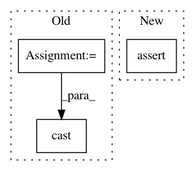

15f70ee5e5a6d9ab272bed0ea66f541c6c91b091,src/python/pants/backend/project_info/filter_targets_test.py,,run_goal,#,32
Before Change
tag_regex: Optional[List[str]] = None,
granularity: Optional[TargetGranularity] = None,
) -> str:
console = MockConsole(use_colors=False)
run_rule_with_mocks(
filter_targets,
rule_args=[
Targets(targets),
create_goal_subsystem(
FilterSubsystem,
sep="\\n",
output_file=None,
target_type=target_type or [],
address_regex=address_regex or [],
tag_regex=tag_regex or [],
granularity=granularity or TargetGranularity.all_targets,
// Deprecated.
type=[],
target=[],
regex=[],
ancestor=[],
),
console,
RegisteredTargetTypes.create({type(tgt) for tgt in targets}),
],
)
assert not console.stderr.getvalue()
return cast(str, console.stdout.getvalue())
def test_no_filters_provided() -> None:
// `filter` behaves like `list` when there are no specified filters.
After Change
RegisteredTargetTypes.create({type(tgt) for tgt in targets}),
],
)
assert not stdio_reader.get_stderr()
return stdio_reader.get_stdout()
def test_no_filters_provided() -> None:
In pattern: SUPERPATTERN
Frequency: 3
Non-data size: 3
Instances
Project Name: pantsbuild/pants
Commit Name: 15f70ee5e5a6d9ab272bed0ea66f541c6c91b091
Time: 2021-04-09
Author: 14852634+Eric-Arellano@users.noreply.github.com
File Name: src/python/pants/backend/project_info/filter_targets_test.py
Class Name:
Method Name: run_goal
Project Name: facebookresearch/Horizon
Commit Name: f353943f836ad162ae45a96a404d5db48dba7690
Time: 2019-07-15
Author: jjg@fb.com
File Name: ml/rl/preprocessing/batch_preprocessor.py
Class Name: PolicyNetworkBatchPreprocessor
Method Name: __call__
Project Name: pantsbuild/pants
Commit Name: 3f431b9aba35ce9f2df33cf9fc0dd786c2fe3f91
Time: 2021-04-02
Author: dawagner@gmail.com
File Name: src/python/pants/core/goals/fmt_test.py
Class Name:
Method Name: run_fmt_rule